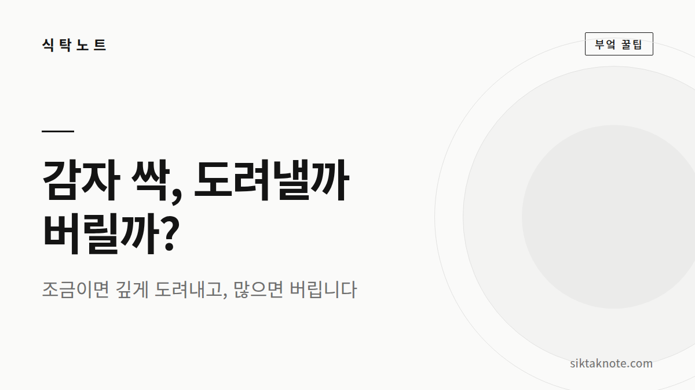
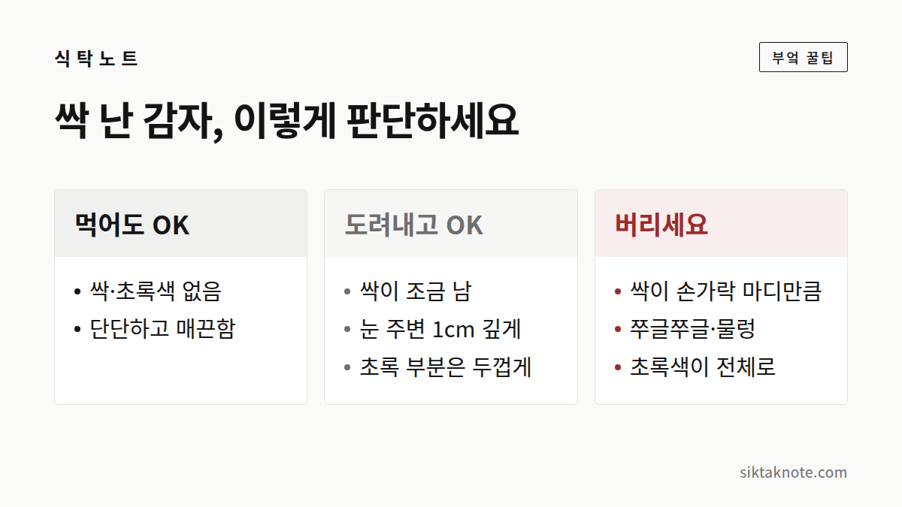

감자에 싹이 났어요, 먹어도 될까? — 손질법과 싹 안 나게 보관하는 법

3줄 요약
- 싹이 조금 났고 감자가 단단하다면, 싹과 그 뿌리를 깊게 도려내고 먹어도 돼요.
- 껍질이 초록색으로 변한 부분은 두껍게 깎아 내 주세요. 삶아도 독성은 잘 없어지지 않아요.
- 싹이 길게 자랐거나, 쭈글쭈글하거나, 먹었을 때 아리고 쓰면 버려 주세요.

싹과 초록색, 왜 조심해야 할까
감자 한 상자를 사 두고 한참 지나 꺼냈더니 싹이 삐죽 나 있을 때가 있죠. 아깝고, 또 먹어도 되나 싶어 손이 멈추고요.
감자는 빛을 받거나 싹을 틔울 때 "솔라닌"이라는 천연 독성 성분을 만들어요. 감자가 스스로를 지키는 방어 물질인데, 싹과 싹이 나는 눈, 햇빛을 받아 초록색이 된 껍질 부근에 몰려 있어요. 많이 먹으면 복통, 구토, 설사, 두통 같은 증상이 생길 수 있고, 몸집이 작은 아이들은 특히 더 조심해야 해요.
여기서 꼭 알아 둘 게 있어요. 솔라닌은 열에 강해서 삶거나 볶아도 잘 줄어들지 않는다는 거예요. "익히면 괜찮겠지" 하는 생각은 이 경우엔 통하지 않아요.

싹이 조금이라면 이렇게 손질해요
- 칼끝이나 감자칼 뒤쪽의 홈으로, 싹이 난 눈 주변을 1cm 정도 깊이로 뿌리까지 파내요.
- 초록빛이 사라질 때까지 넉넉히 깎아 내요.
- 싹이 났던 감자는 껍질째 요리하지 말고 벗겨서 써요.
- 익힌 뒤에 아리거나 쓴맛이 나면 거기서 멈추고 먹지 않아요.

도려내지 말고 버려야 하는 감자
싹이 손가락 마디만큼 길게 자랐거나, 감자 전체가 쭈글쭈글하고 물렁하거나, 초록색이 전체로 퍼져 있거나, 싹이 여러 군데서 한꺼번에 났다면 버리는 게 맞아요. 이런 감자는 도려내도 남은 부분에 성분이 많을 수 있거든요. 정 아깝다면 화분에 심어 보는 것도 하나의 방법이에요.
싹이 덜 나게 두려면
감자는 어둡고 서늘하고 바람이 통하는 곳을 좋아해요. 빛이 들면 초록색으로 변하고 싹이 나니까 종이봉투나 박스에 담아 두고, 베란다 그늘이나 다용도실처럼 선선한 곳에 놓아 주세요. 비닐봉지는 습기가 차서 쉽게 썩어요.
씻지 않고 흙이 묻은 채로 두는 것도 방법이에요. 흙이 감자를 지켜 주니까, 먹기 직전에 씻으면 돼요. 양파와 함께 두면 서로 빨리 상한다고 알려져 있어서 따로 두는 게 좋고, 사과를 한두 개 같이 넣어 두면 사과에서 나오는 가스가 싹을 늦춘다는 이야기도 많아요. 손해 볼 게 없으니 한 번쯤 시도해 볼 만해요.
냉장고는 어떨까
일반 냉장 온도에 오래 두면 감자 속 전분이 당으로 바뀌어서 단맛이 강해지고 식감도 달라져요. 이런 감자를 높은 온도로 튀기거나 구우면 색이 쉽게 짙어지기도 하고요. 그래서 통감자는 냉장고보다 서늘한 실온이 낫답니다.
다만 이미 깎거나 자른 감자는 물에 담가 냉장 보관하고, 하루 이틀 안에 쓰세요.
싹이 조금이면 깊게 도려내고, 많이 났다면 보내 주기. 그리고 어둡고 서늘하고 바람 통하는 자리만 내어 주면, 감자 한 박스도 끝까지 안전하게 먹을 수 있어요.